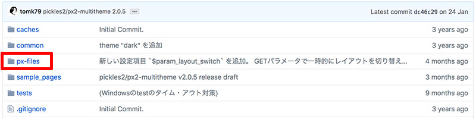
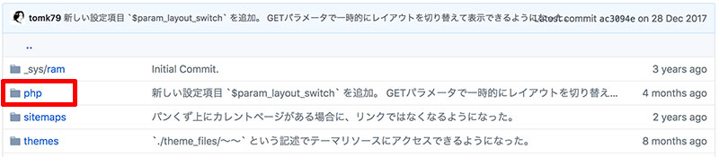
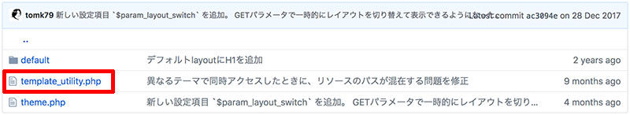
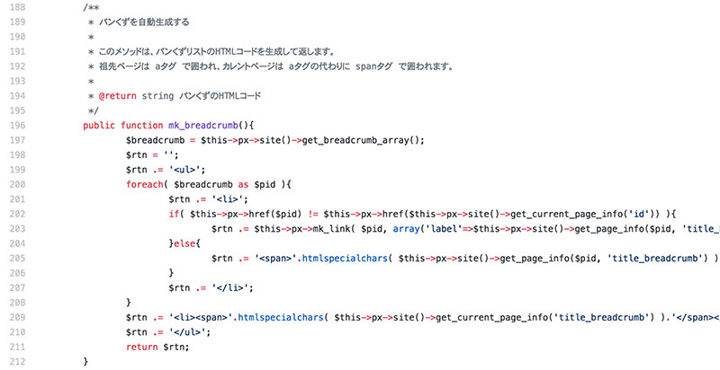

プラグインの中身を知りたい時は小柳さんのGitHubを見にいきます。
Packagistを開くと右上にURLが記載されていますのでこれを開いてください。次のような画面が表示されますので「px-files ⇒ php ⇒ template_utility.php」の順に展開してください。
template_utility.phpを開くと下のようなコードが出てきます。これが「プラグインの中身」です。以下のコードはパンくずを自動生成するプラグインです。
このようにテーマはさまざまなプラグインを組み合わせることで、簡単にダイナミックなページレイアウトを作ることができます。次の章ではレイアウトについて詳しく見ていきましょう。